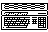
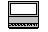

Previous
Next
TOC
Das obligatorische
Vorwort
Kursteil
 Computer
Der 260ST und 520ST
Die Reparaturtips
Die Beschleunigerboards
Die Speichererweiterungskarten
Die MagnumST Karte fÅE alle ST Computer
Der 1040STF und 1040STFM
Die Reparaturtips
Der MegaST (1/2/4)
Die Reparaturtips

Der Stacy Laptop
Die Reparaturtips
Der 520/1040STE
Die Reparaturtips
Der MegaSTE (altes Board)
Der MegaSTE (neues Board)
Die Reparaturtips
MegaSTE/Stacy Hostadapter auf Parity umrÅEten
Dem MegaSTE/Stacy Hostadapter eine zweite Fest-
platte beibringen
Die MagnumSTE Karte fÅE alle MegaSTE Computer
Der STBook Notebook
Die Reparaturtips
Der Atari STylus/Atari STpad
weiterbl‰ttern